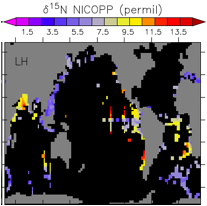

|
 |
Reconstructing
Glacial Nitrogen and Carbon Cycling Using Isotopes Opportunity for
Graduate Students: We’re looking for a graduate (MS or PhD) student with
strong math and/or physics skills. Funding for three years of tuition and
salary is available. The tasks are to include iron cycling in a global ocean
circulation/biogeochemistry model, compare to modern observations, perform
simulations of the Last Glacial Maximum (LGM, 20,000 years ago) and compare
model results with measurements from ocean sediments from that time.
Interested applicants are encouraged to contact Andreas Schmittner
(aschmitt{at}coas.oregonstate.edu) and click here (follow the “Prospective
Students” link). |
|
Measurements of nitrogen and
carbon isotopes from deep-sea sediments document dramatic changes between the
last ice age and the modern ocean. However, both nitrogen and carbon isotopes
are influenced by different physical and biogeochemical processes, which makes
their interpretation ambiguous. In this research, a process-based coupled model
of climate, ocean circulation and biogeochemistry that includes carbon and
nitrogen isotopes will be used in conjunction with sediment data in order to
reconstruct glacial nitrogen and carbon cycles. The model will be amended with
explicit iron cycling and global databases of nitrogen and carbon isotopes from
Last Glacial Maximum and modern ocean sediments will be compiled. This approach
allows testing of hypotheses concerning changes in the total ocean nitrogen
inventory, polar nutrient consumption due to iron fertilization and their
effects on atmospheric CO2 concentrations.
Links: Previous
Project, NICOPP,
Andreas’ homepage
Funded by the
Marine Geology and Geophysics program of the National Science Foundation.